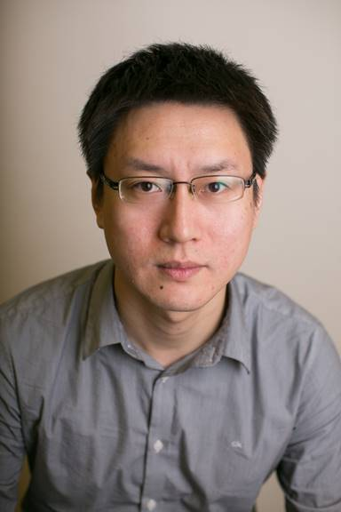

Qiang Ye
Assistant Professor, PhD, IEEE Senior Member
Department of Computer Science
Memorial University of Newfoundland
S. J. Carew Building
240 Prince Phillip Drive
St. John's, NL, Canada A1B 3X5
Email: qiangy@mun.ca
Tel: (709)864-4550
Office: EN-2033 |
 |
|